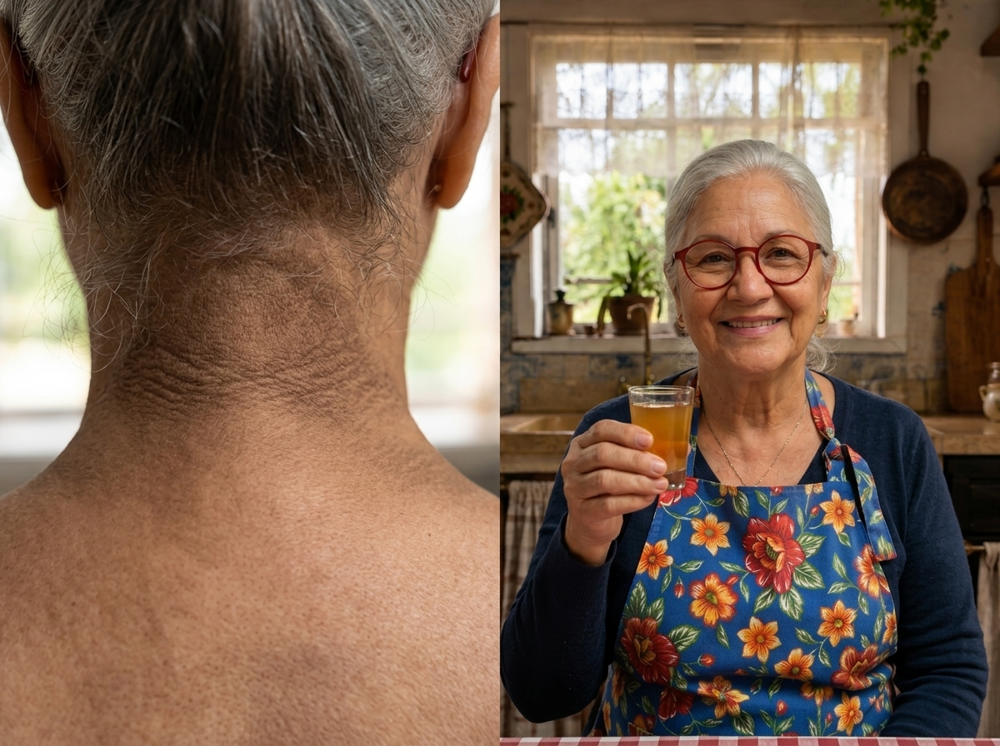
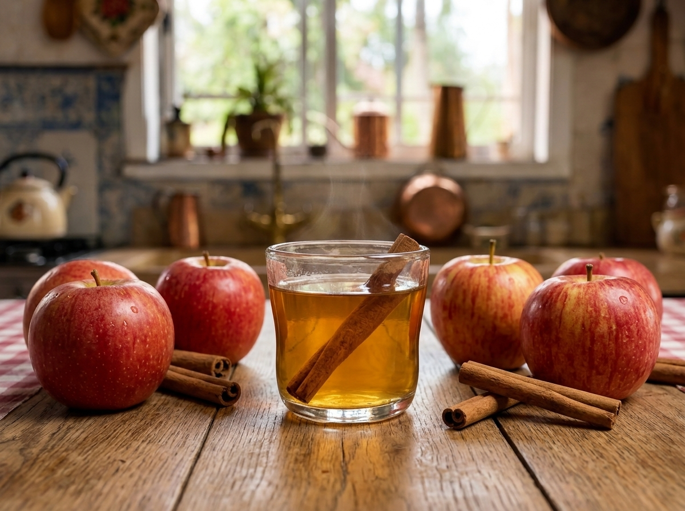

As Manchas Escuras no Pescoço Não São Sujeira — São o Aviso Que o Corpo Dá Antes da Diabetes
Esse shot caseiro de vinagre com canela ajuda a melhorar a sensibilidade à insulina e clarear a pele com o tempo — sem remédio caro e sem dieta de sofrimento.

Não é sujeira. É insulina alta pedindo socorro.
📋 O Caderno Anti-Insulina da Dona Sebastiana
Minha filha, aquela mancha escura na dobra do pescoço, nas axilas ou embaixo dos seios não é sujeira. Não sai com bucha no banho. É o seu corpo pedindo socorro. Aqui está o checklist de 3 dias para você começar a reverter isso hoje:

O Shot Sensibilizador, pronto em menos de 1 minuto.
Logo pela manhã, em jejum, tome este Shot de Vinagre e Canela.
*Ajuda a "acordar" os receptores de insulina para que funcionem melhor durante o dia.
Hoje, proteja o corpo contra a inundação de açúcar. Na hora de comer, use a ordem correta:
*Isso faz o açúcar entrar devagar no sangue, evitando que o pâncreas jogue um balde de insulina de uma vez só.
Depois de almoçar ou jantar, não deite no sofá imediatamente.
*Esse movimento leve faz os músculos "sugarem" a glicose do sangue sem precisar de insulina. Um descanso enorme para o pâncreas!
Mas atenção, minha filha... o shot ajuda, mas sozinho não basta.
Muitas mulheres sofrem em silêncio com essas manchas escuras — que os médicos chamam de Acantose Nigricante. Gastam fortunas com cremes clareadores, esfregam a pele até machucar no banho e sentem vergonha de usar um colar ou prender o cabelo.
Tudo isso tem a mesma causa: o excesso de insulina circulando no sangue. O corpo ficou resistente a ela — como se a fechadura das células estivesse emperrada, e o pâncreas precisasse produzir cada vez mais insulina para colocar o açúcar para dentro.
Sem resolver essa resistência pela raiz, o açúcar continua se acumulando na pele e na barriga — podendo evoluir para diabetes em pouco tempo.
O erro não é O QUE você come, é a ORDEM em que você come
Com resistência à insulina, o corpo está cansado. Toda vez que você come um carboidrato sozinho — um pãozinho de manhã, um biscoito à tarde — a glicose sobe rápido. O pâncreas se desespera e solta uma descarga enorme de insulina.
Essa insulina alta impede o corpo de queimar gordura. Ela manda um sinal claro: "guarde gordura na barriga e escureça a pele".
Mas existe uma forma científica e simples de destravar essa "fechadura": a Sincronia Digestiva.

Ao comer na ordem correta:
O açúcar entra tão devagar que o corpo não precisa produzir aquela montanha de insulina. A insulina começa a cair, as células voltam a respirar, a gordura da barriga começa a queimar — e as manchas na pele começam a clarear.
Veja a transformação de quem começou a aplicar a Sincronia Digestiva
Eu morria de vergonha de prender o cabelo, porque achava que as pessoas pensavam que meu pescoço estava sujo. Depois que comecei a seguir as orientações da Dona Sebastiana e a ordem da comida, as manchas clarearam quase tudo em menos de um mês! E aquela barriga inchada finalmente começou a secar.
Minha insulina estava em 28 — muito alta — e eu já estava pré-diabética. Fazendo o shot de vinagre de manhã e mudando a ordem do prato no almoço e na janta, minha insulina caiu para 9 em dois meses de exames. O médico ficou impressionado e disse para eu continuar firme.

Talvez você tenha algumas dúvidas...

Leveza, vitalidade — e nenhuma dor.
Sim, minha filha! As manchas são apenas o reflexo do que acontece por dentro. Passar creme na pele é como pintar uma parede com infiltração. Você precisa tratar a causa: baixar a insulina de forma natural, através da alimentação.
De jeito nenhum! Se você tentar cortar tudo, a compulsão por doces vai dobrar, porque a insulina alta causa fome. O segredo é comer o que você gosta, na ordem certa, para manter o corpo saciado e a insulina baixa.
Sempre siga as orientações do seu médico — mas o nosso método é 100% natural e focado em comida de verdade. Ele ajuda o corpo a se curar sozinho, sem os efeitos colaterais dos remédios injetáveis ou de tarja preta.
Com certeza! Foi desenhado exatamente para o metabolismo depois dos 50 e 60 anos, respeitando o ritmo natural e mais lento do corpo.
O Método Fígado Leve
Para você destravar a insulina, clarear a pele e secar a barriga de forma simples, preparamos um método passo a passo:

📗 O Guia Completo Fígado Leve
(Baseado na Sincronia Digestiva)
Um livro digital com leitura simplificada, letras grandes e imagens ilustrativas, para ler no celular ou computador sem dificuldade.
Inscrevendo-se hoje, você leva estes 4 bônus sem pagar nada a mais:
Um cardápio simples para desinflamar o corpo rapidamente nas duas primeiras semanas.
Mais de 7 receitas de chás e shots caseiros que ajudam a clarear a pele e baixar a insulina.
Para imprimir ou salvar no celular e consultar na hora de montar o prato.
Um espaço para registrar sua evolução e ver as manchas clareando, dia a dia.
Minha garantia de 7 dias
Você não corre risco nenhum. Experimente o método por 7 dias — faça o shot de manhã, mude a ordem do almoço. Se não notar melhora ou não gostar do material, mande uma mensagem e devolvo o valor pago integralmente.